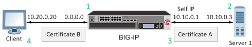

Updated Date: 09/02/2026
Implementing SSL Forward Proxy on a Single BIG-IP System
With the BIG-IP system’s SSL forward proxy functionality, you can encrypt all traffic between a client and the BIG-IP system, by using one certificate, and to encrypt all traffic between the BIG-IP system and the server, by using a different certificate.
A client establishes a three-way handshake and SSL connection with the wildcard IP address of the BIG-IP system virtual server. The BIG-IP system then establishes a three-way handshake and SSL connection with the server, and receives and validates a server certificate (while maintaining the separate connection with the client). The BIG-IP system uses the server certificate to create a second unique server certificate to send to the client. The client receives the second server certificate from the BIG-IP system, but recognizes the certificate as originating directly from the server.
Important: To enable SSL forward proxy functionality, you can either:
- Disassociate existing Client SSL and Server SSL profiles from a virtual server and configure the SSL Forward Proxy settings.
- Create new Client SSL and Server SSL profiles and configure the SSL Forward Proxy settings.
Then with either option, select the Client SSL and Server SSL profiles on a virtual server. You cannot modify existing Client SSL and Server SSL profiles while they are selected on a virtual server to enable SSL forward proxy functionality.

- Client establishes three-way handshake and SSL connection with wildcard IP address.
- BIG-IP system establishes three-way handshake and SSL connection with server.
- BIG-IP system validates a server certificate (Certificate A), while maintaining the separate connection with the client.
- BIG-IP system creates different server certificate (Certificate B) and sends it to client.
To implement SSL forward proxy client-to-server authentication, as well as application data manipulation, you perform a few basic configuration tasks. Note that you must create both a Client SSL and a Server SSL profile, and enable the SSL Forward Proxy feature in both profiles.
You perform this task to create a Client SSL forward proxy profile that makes it possible for client and server authentication while still allowing the BIG-IP system to perform data optimization, such as decryption and encryption. This profile applies to client-side SSL forward proxy traffic only.
-
On the Main tab, click Local Traffic > Profiles > SSL > Client.
The Client SSL profile list screen opens.
-
Click Create.
The New Client SSL Profile screen opens.
-
In the Name field, type a unique name for the profile.
-
From the Parent Profile list, select clientssl.
-
From the SSL Forward Proxy list, select Advanced.
-
Select the Custom check box for the SSL Forward Proxy area.
-
Modify the SSL Forward Proxy settings.
-
From the SSL Forward Proxy list, select Enabled.
-
From the CA Certificate list, select a certificate.
Important: If the BIG-IP system is part of a DSC Sync-Failover group, always select a non-default certificate name, and ensure that this same certificate name is specified in every instance of this SSL profile in the device group. Taking these actions helps to ensure that SSL handshakes are successful after a failover event.
-
From the CA Key list, select a key.
Important: If the BIG-IP system is part of a DSC Sync-Failover group, always select a non-default key name, and ensure that this same key name is specified in every instance of this SSL profile in the device group. Taking these actions helps to ensure that SSL handshakes are successful after a failover event.
-
In the CA Passphrase field, type a passphrase.
-
In the Confirm CA Passphrase field, type the passphrase again.
-
In the Certificate Lifespan field, type a lifespan for the SSL forward proxy certificate in days.
-
From the Certificate Extensions list, select Extensions List.
-
For the Certificate Extensions List setting, select the extensions that you want in the Available extensions field, and move them to the Enabled Extensions field using the Enable button.
-
Select the Cache Certificate by Addr-Port check box if you want to cache certificates by IP address and port number.
-
From the SSL Forward Proxy Bypass list, select Enabled.
Additional settings display.
-
From the Bypass Default Action list, select Intercept or Bypass.
The default action applies to addresses and hostnames that do not match any entry specified in the lists that you specify. The system matches traffic first against destination IP address lists, then source IP address lists, and lastly, hostname lists. Within these, the default action also specifies whether to search the intercept list or the bypass list first.
Note: If you select Bypass and do not specify any additional settings, you introduce a security risk to your system.
-
-
For detailed information on the different settings of the SSL:Client page, refer to the SSL Traffic Management chapter (Create a custom Client SSL profile section) of the SSL Administration guide.
-
Click Finished.
You perform this task to create a Server SSL forward proxy profile that makes it possible for client and server authentication while still allowing the BIG-IP system to perform data optimization, such as decryption and encryption. This profile applies to server-side SSL forward proxy traffic only.
-
On the Main tab, click Local Traffic > Profiles > SSL > Server.
The Server SSL profile list screen opens.
-
Click Create.
The New Server SSL Profile screen opens.
-
In the Name field, type a unique name for the profile.
-
From the Parent Profile list select serverssl.
-
Select the Custom check box for the Configuration area.
-
From the SSL Forward Proxy list, select Enabled.
-
For detailed information on the different settings of the SSL:Server page, refer to the SSL Traffic Management chapter (Create a custom Server SSL profile section) of the SSL Administration guide.
-
Click Finished.
The custom Server SSL forward proxy profile now appears in the Server SSL profile list screen.
Ensure that at least one virtual server exists in the configuration before you start to create a load balancing pool.
Create a pool of systems with Access Policy Manager to which the system can load balance global traffic.
-
On the Main tab, click DNS > GSLB > Pools.
The Pool List screen opens.
-
Click Create.
The New Pool screen opens.
-
In the General Properties area, in the Name field, type a name for the pool.
Names must begin with a letter, and can contain only letters, numbers, and the underscore (_) character.
Important: The pool name is limited to 63 characters.
-
From the Type list, depending on the type of the system (IPv4 or IPv6), select either an A or AAAA pool type.
-
In the Configuration area, for the Health Monitors setting, in the Available list, select a monitor type, and move the monitor to the Selected list.
Tip: Hold the Shift or Ctrl key to select more than one monitor at a time.
-
In the Members area, for the Load Balancing Method settings, select a method that uses virtual server score:
- VS Score - If you select this method, load balancing decisions are based on the virtual server score only.
- Quality of Service - If you select this method, you must configure weights for up to nine measures of service, including VS Score. Virtual server score then factors into the load balancing decision at the weight you specify.
-
For the Member List setting, add virtual servers as members of this load balancing pool.
The system evaluates the virtual servers (pool members) in the order in which they are listed. A virtual server can belong to more than one pool.
-
Select a virtual server from the Virtual Server list.
-
Click Add.
-
-
Click Finished.
You can specify a virtual server to be either a host virtual server or a network virtual server to manage application traffic.
-
On the Main tab, click Local Traffic > Virtual Servers.
The Virtual Server List screen opens.
-
Click Create.
The New Virtual Server screen opens.
-
In the Name field, type a unique name for the virtual server.
-
For a network, in the Destination Address/Mask field, type an IPv4 or IPv6 address in CIDR format to allow all traffic to be translated.
The supported format is address/prefix, where the prefix length is in bits. For example, an IPv4 address/prefix is 0.0.0.0/0, and an IPv6 address/prefix is ::/0.
-
In the Service Port field:
- If you want to specify a single service port or all ports, confirm that the Port button is selected, and type or select a service port.
- If you want to specify multiple ports other than all ports, select the Port List button, and confirm that the port list that you previously created appears in the box.
-
For the SSL Profile (Client) setting, from the Available list, select the name of the Client SSL forward proxy profile you previously created, and using the Move button, move the name to the Selected list.
Important:
To enable SSL forward proxy functionality, you can either:
- Disassociate existing Client SSL and Server SSL profiles from a virtual server and configure the SSL Forward Proxy settings.
- Create new Client SSL and Server SSL profiles and configure the SSL Forward Proxy settings. Then with either option, select the Client SSL and Server SSL profiles on a virtual server. You cannot modify existing Client SSL and Server SSL profiles while they are selected on a virtual server to enable SSL forward proxy functionality.
-
For the SSL Profile (Server) setting, from the Available list, select the name of the Server SSL forward proxy profile you previously created, and using the Move button, move the name to the Selected list.
Important:
To enable SSL forward proxy functionality, you can either:
- Disassociate existing Client SSL and Server SSL profiles from a virtual server and configure the SSL Forward Proxy settings.
- Create new Client SSL and Server SSL profiles and configure the SSL Forward Proxy settings. Then with either option, select the Client SSL and Server SSL profiles on a virtual server. You cannot modify existing Client SSL and Server SSL profiles while they are selected on a virtual server to enable SSL forward proxy functionality.
-
Assign other profiles to the virtual server if applicable.
-
In the Resources area, from the Default Pool list, select the name of the pool that you created previously.
-
Click Finished.
The virtual server now appears in the Virtual Server List screen.
After you complete the tasks in this implementation, the BIG-IP® system ensures that the client system and server system can authenticate each other independently. After client and server authentication, the BIG-IP system can intelligently decrypt and manipulate the application data according to the configuration settings in the profiles assigned to the virtual server.